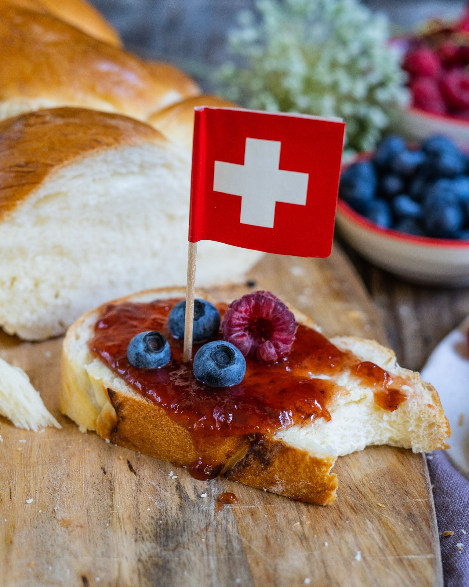

The most traditional swiss recipes
Introduction:
This book features some of my favorite recipes that I learnt from my mother, father, and grandmother. I've been experimenting with different ingredients and amounts to develop my own versions of some of Switzerland's most famous recipes.
Go to:
Recipe 1: Breadcake
All in variant
- Difficulty: intermediate
- Preparation: 60 mintues
- Cooking: 60 minutes
- Serve for: 8 people
- Cost: low
Perfect to use up your leftover bread.

Ingredients:
- 300 g leftover bread
- 8 dl milk
- 100 g candied lemon peel
- 100 g candied orange peel
- 50 g soft sultanas
- 100 g chopped dark chocolate
- 1 tablespoon cocoa powder
- 150 g ground almonds
- ½ dl grappa
- 1 eggs
- 50 g sugar
- a little salt
- a little cinnamon powder
- mandels
- 1 chilli
- 30 g pine nuts
Preparation:
- Combine the fine bread cubes and the milk.
- Leave for at least 30 minutes before mixing the ingredients into a fine mass.
- Mix in the candied lemon and orange peel, sultanas, chopped chocolate, cocoa powder, almonds, mandels, chilli, and grappa.
- Gently combine the egg, sugar, salt.
- Fill the cake tin with the mass and sprinkle with pine nuts.
- Bake for 1 hour at 190° in a preheated oven.
Recipe 2: Treccia
Natural variant
- Difficulty: easy
- Preparation: 20 minutes
- Cooking: 30 minutes
- Serve for: 6 people
- Cost: low
Perfect fit for every sunday morning.

Ingredients:
- 500 g white flour
- 2 level teaspoons of salt
- 20 g of yeast
- 1 teaspoon sugar
- 70 g butter
- approx. 3 dl milk
- 1 egg
Preparation:
- Pour the flour and salt into a bowl and make a well. Mix the yeast with the sugar and pour into the centre. Melt the butter and pour in the milk, then add the milk and butter to the flour.
- Knead everything until a soft, homogeneous dough is obtained. Cover the dough with a damp cloth and let it rise at room temperature until the dough doubles in volume.
- Cut the treccia dough in half after it has risen and knead it on a flour-dusted surface to form two loaves.
- Place the loaves on the work surface and cross them. Create a treccia by overlapping the two strands of dough alternately.
- Beat the egg and brush the treccia twice. Bake in the middle of the oven at 200C for 25-30 minutes.
Recipe 3: Fondue
The classic
- Difficulty: easy
- Preparation: 15 minutes
- Cooking: 15 minutes
- Serve for: 4 people
- Cost: medium
A fresh yet delicious fondue with your favourite cheese.

Ingredients:
- 2 ½ cups shredded Gruyere cheese
- 2 ½ cups shredded Emmental cheese
- 2 tablespoons cornstarch
- 1 clove garlic, halved
- 1 ½ cups dry white wine
- 1 big bread, cubed
- 10 cooked baby potatoes
- 1 cup cornichons
- 1 cup pickled pearl onions
Preparation:
- Combine Gruyère cheese, Emmental cheese, and cornstarch in a bowl. Mix until the cheese is evenly coated. Set aside.
- Rub the cut side of the garlic all over the inside of a fondue pot or heavy saucepan. Add wine and place over medium heat. Bring to a simmer, then gradually add cheese and cornstarch mixture. Stir with a spatula, gently stirring in a figure-of-eight motion, until all of the cheese is added and the fondue is smooth and homogenous. Reduce heat to medium-low if the fondue is boiling too vigorously.
- Immediately serve fondue, preferably over a warmer. If you used a saucepan on the stove to heat the fondue, you can carefully transfer the fondue to a fondue pot to serve.